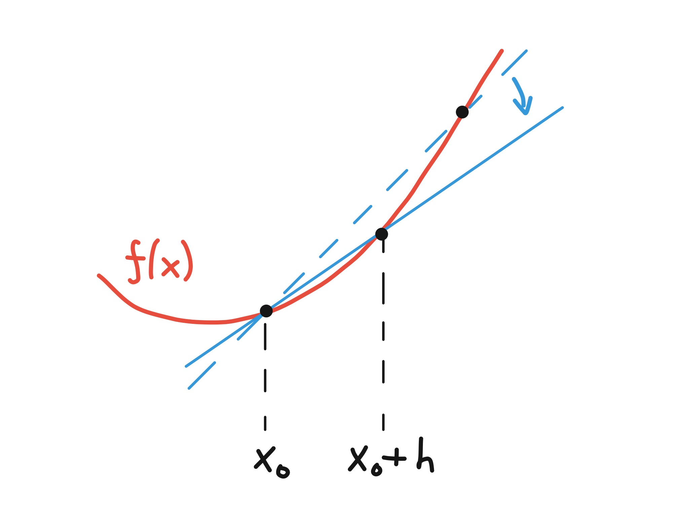
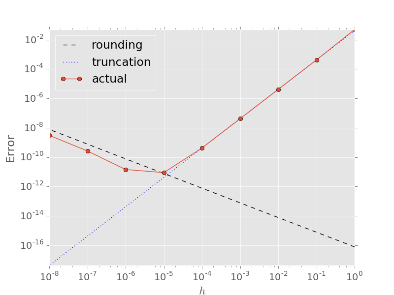
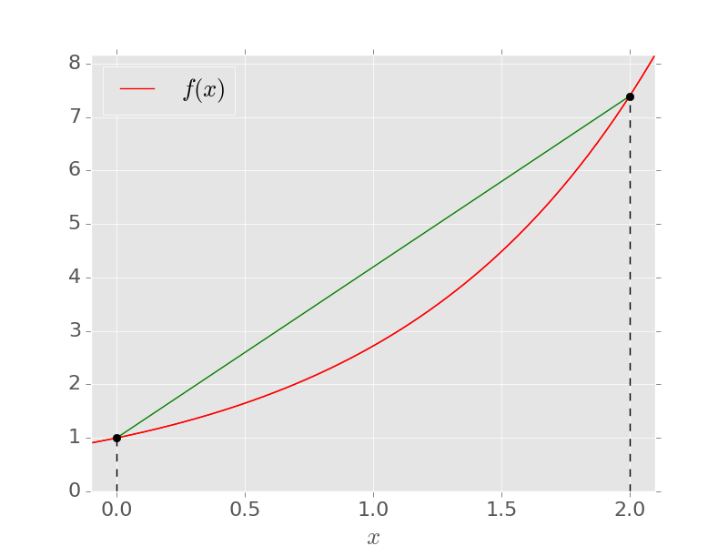
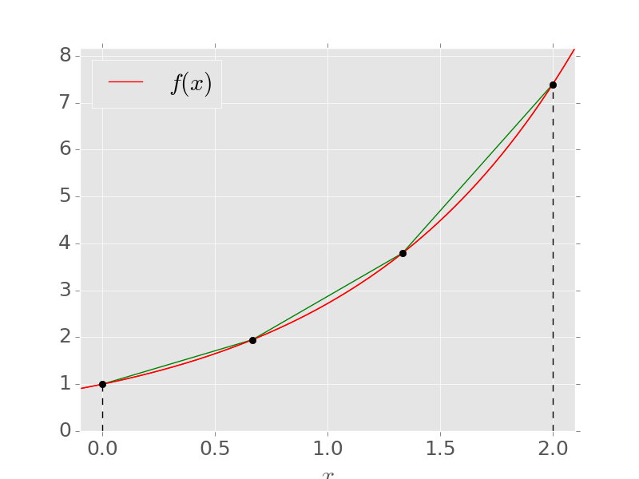

MATH2731 Computational Mathematics II
\[ f'(x_0) = \lim_{h\to 0}\frac{f(x_0+h) - f(x_0)}{h} \]
Forward difference (\(h>0\)): \[ f'(x_0) \approx \frac{f(x_0 + h) - f(x_0)}{h} \]
(\(h<0\): backward difference)

Taylor’s theorem: for some \(\xi\) between \(x_0\) and \(x_0+h\), \[ f(x_0+h) = f(x_0) + h f'(x_0) + \frac{h^2}{2}f''(\xi) \]
\[ \implies \quad f'(x_0) = \frac{f(x_0+h)-f(x_0)}{h} - \frac{h}{2}f''(\xi) \]
Derivative of \(f(x)=\log(x)\) at \(x_0=2\)
| \(h\) | Forward difference | Error \(\vert f'(2) - D\vert\) |
|---|---|---|
| 1 | 0.405465 | 0.0945349 |
| 0.1 | 0.487902 | 0.0120984 |
| 0.01 | 0.498754 | 0.00124585 |
| 0.001 | 0.499875 | 0.000124958 |
Error \(\approx 0.125 h\): agrees with \(|f''(\xi)|/2 \approx \tfrac18\) since \(f''(x) = -x^{-2}\).
\[ f(x \pm h) = f(x) \pm hf'(x) + \frac{h^2}{2}f''(x) \pm \frac{h^3}{6}f'''(\xi_\pm) \]
Subtract: \[ f'(x) = \frac{f(x+h) - f(x-h)}{2h} - \frac{h^2}{6}f'''(\xi), \qquad \xi\in(x-h,x+h) \]
Slope of the quadratic interpolating \(f\) at \(x-h\), \(x\), \(x+h\): second order.
Derivative of \(f(x)=\log(x)\) at \(x=2\)
| \(h\) | Forward | Error | Central | Error |
|---|---|---|---|---|
| 1 | 0.405465 | 0.0945349 | 0.549306 | 0.0493061 |
| 0.1 | 0.487902 | 0.0120984 | 0.500417 | 0.000417293 |
| 0.01 | 0.498754 | 0.00124585 | 0.500004 | 4.16673e-06 |
| 0.001 | 0.499875 | 0.000124958 | 0.500000 | 4.16666e-08 |
Add the expansions of \(f(x\pm h)\) (to one more term): \[ f''(x) = \frac{f(x-h) - 2f(x) + f(x+h)}{h^2} - \frac{h^2}{12}f^{(4)}(\xi) \]
Second derivative of \(f(x)=\log(x)\) at \(x=2\) \(f''(2) = -\tfrac14\), \(f^{(4)}(2) = -\tfrac38\), so expect error \(\approx 0.03125h^2\):
| \(h\) | Central difference for \(f''(2)\) | Error |
|---|---|---|
| 1 | -0.2876820725 | 0.0376821 |
| 0.1 | -0.2503130218 | 0.000313022 |
| 0.01 | -0.2500031251 | 3.12505e-06 |
| 0.001 | -0.2500000311 | 3.11212e-08 |
\(\text{fl}[f(x\pm h)] = (1+\delta_{1,2})f(x\pm h)\), \(\;|\delta_1|,|\delta_2|\leq \epsilon_{\rm M}\): \[ \begin{aligned} \left| f'(x) - \frac{\text{fl}[f(x+h)] - \text{fl}[f(x-h)]}{2h}\right| &= \left| - \frac{f'''(\xi)}{6}h^2 - \frac{\delta_1f(x+h) - \delta_2f(x-h)}{2h}\right|\\ &\leq \underbrace{\frac{h^2}{6}M_3}_{\text{truncation}} + \underbrace{\frac{\epsilon_{\rm M}}{h}M_0}_{\text{rounding}} \end{aligned} \]
\(M_0\), \(M_3\): maxima of \(|f|\), \(|f'''|\) on \([x-h,x+h]\)
Derivative of \(f(x)=\log(x)\) at \(x=2\) again

\[ E(h) = \tfrac16 h^2M_3 + \frac{\epsilon_{\rm M}M_0}{h}, \qquad E'(h) = \tfrac13 hM_3 - \frac{\epsilon_{\rm M}M_0}{h^2} = 0 \]
\[ \implies \quad h_* = \left(\frac{3\epsilon_{\rm M}M_0}{M_3}\right)^{1/3} \sim \epsilon_{\rm M}^{1/3}, \qquad E(h_*) \sim \epsilon_{\rm M}^{2/3} \]
Measurement errors of size \(\delta\) (usually \(\gg \epsilon_{\rm M}\)): \[ \text{error} \lesssim \frac{h^2}{6}M_3 + \frac{\delta}{h} \]
Ball rolling down a ramp: \(x(t) = t^2\), \(a = 2\,\)m/s\(^2\), positions every \(0.02\,\)s with \(\approx 2\,\)mm errors.
rng(1) % reproducible "measurements"
dt = 0.02; t = (0:dt:2)';
x = t.^2 + 0.002*randn(size(t)); % noisy positions [m]
% Central differences for velocity and acceleration at interior points
v = (x(3:end) - x(1:end-2)) / (2*dt);
a = (x(3:end) - 2*x(2:end-1) + x(1:end-2)) / dt^2;
% Least-squares quadratic fit, then differentiate the fitted model
p = polyfit(t, x, 2);
aFit = 2*p(1);figure
subplot(1, 2, 1)
plot(t(2:end-1), v, 'o', t, 2*t, 'LineWidth', 2.5, 'MarkerSize', 5)
legend('finite differences', 'exact v = 2t', 'Location', 'northwest')
xlabel('t [s]'), ylabel('velocity [m/s]'), grid on, set(gca, 'FontSize', 16)
subplot(1, 2, 2)
plot(t(2:end-1), a, 'o', t, 2*ones(size(t)), t, aFit*ones(size(t)), '--', ...
'LineWidth', 2.5, 'MarkerSize', 5)
legend('finite differences', 'exact a = 2', 'from least-squares fit', 'Location', 'southwest')
xlabel('t [s]'), ylabel('acceleration [m/s^2]'), grid on, set(gca, 'FontSize', 16)\[ D_h := \frac{f(x+h) - f(x-h)}{2h} \]
Expand the truncation error further: \[ D_h = f'(x) + f'''(x)\frac{h^2}{6} + f^{(5)}(x)\frac{h^4}{120} + {\cal O}(h^6) \]
\[ D_{h/2} = f'(x) + f'''(x)\frac{h^2}{2^2(6)} + f^{(5)}(x)\frac{h^4}{2^4(120)} + {\cal O}(h^6) \]
Eliminate the \(h^2\) term: \[ D_h^{(1)} := \frac{2^2D_{h/2} - D_h}{3} = f'(x) - f^{(5)}(x)\frac{h^4}{480} + {\cal O}(h^6) \quad \text{: 4th order} \]
Derivative of \(f(x)=\log(x)\) at \(x=2\) (central difference)
| \(h\) | \(D_h\) | \(\vert\)Error\(\vert\) | \(D_h^{(1)}\) | \(\vert\)Error\(\vert\) |
|---|---|---|---|---|
| 1.0 | 0.5493061443 | 0.04930614433 | 0.4979987836 | 0.00200121642 |
| 0.1 | 0.5004172928 | 0.00041729278 | 0.4999998434 | 1.56599487e-07 |
| 0.01 | 0.5000041667 | 4.16672916e-06 | 0.5000000000 | 1.56388791e-11 |
| 0.001 | 0.5000000417 | 4.16666151e-08 | 0.5000000000 | 9.29256672e-14 |
Error falls by \(\approx 10^4\) per row until rounding error (\(\approx\epsilon_{\rm M}/h\)) takes over.
For any order-\(n\) approximation \[ D_h = f'(x) + Ch^n + {\cal O}(h^{n+1}), \qquad D_{h/2} = f'(x) + C\frac{h^n}{2^n} + {\cal O}(h^{n+1}) \]
\[ \implies \quad D_h^{(1)} := \frac{2^nD_{h/2} - D_h}{2^n - 1} = f'(x) + {\cal O}(h^{n+1}) \]
\[ I(f) := \int_a^b f(x)\,\mathrm{d}x \;\approx\; I_n(f) := \sum_{k=0}^n \sigma_k f(x_k) \]
Nodes \(x_0,\ldots,x_n\), weights \(\sigma_0,\ldots,\sigma_n\)
The trapezium rule
\[ I_1(f) = \frac{b-a}{2}\Big( f(a) + f(b) \Big) \]
\(\int_0^2\mathrm{e}^x\,\mathrm{d}x\): \[ I_1(f) = \mathrm{e}^0 + \mathrm{e}^{2} = 8.389 \] \[ I(f) = \mathrm{e}^{2} - \mathrm{e}^0 = 6.389 \]

Integrate the interpolating polynomial \(p_n(x) = \sum_{k=0}^n f(x_k)\ell_k(x)\): \[ I_n(f) := \int_a^b p_n(x)\,\mathrm{d}x = \sum_{k=0}^n\sigma_k f(x_k), \qquad \sigma_k = \int_a^b\ell_k(x)\,\mathrm{d}x \]
Trapezium rule: closed Newton-Cotes with \(n=1\) \[ \sigma_0 = \int_a^b\frac{x-b}{a-b}\,\mathrm{d}x = \frac{b-a}{2}, \qquad \sigma_1 = \int_a^b\frac{x-a}{b-a}\,\mathrm{d}x = \frac{b-a}{2} \]
Theorem Let \(f\) be continuous on \([a,b]\) with \(n+1\) continuous derivatives on \((a,b)\). Then \[ \big|I(f) - I_n(f)\big| \leq \frac{\max_{\xi\in[a,b]}|f^{(n+1)}(\xi)|}{(n+1)!}\int_a^b\big|(x-x_0)(x-x_1)\cdots(x-x_{n}) \big|\,\mathrm{d}x. \]
\[ \big|I(f) - I_n(f)\big| = \left| \int_a^b\big[f(x) - p_n(x)\big]\,\mathrm{d}x\right| \leq \int_a^b\big|f(x) - p_n(x)\big|\,\mathrm{d}x, \] then insert the interpolation error formula \[ f(x) - p_n(x) = \frac{f^{(n+1)}(\xi)}{(n+1)!}(x-x_0)\cdots(x-x_{n}). \quad\blacksquare \]
Trapezium rule error With \(M_2 = \max_{\xi\in[a,b]}|f''(\xi)|\): \[ \big|I(f) - I_1(f)\big| \leq \frac{M_2}{2!}\int_a^b(x-a)(b-x)\,\mathrm{d}x = \frac{(b-a)^3}{12}M_2 \]
For \(\int_0^2\mathrm{e}^x\,\mathrm{d}x\): \[ \big|I(f) - I_1(f)\big| \leq \tfrac1{12}(2^3)\mathrm{e}^{2} \approx 4.926 \qquad (\text{actual error} \approx 2.000) \]
\(m\) subintervals of width \(h = (b-a)/m\), trapezium rule on each: \[ C_{1,m}(f) = h\left[\tfrac12 f(x_0) + f(x_1) + f(x_2) + \ldots + f(x_{m-1}) + \tfrac12 f(x_m) \right] \]

On each subinterval: \[ \int_{x_{i-1}}^{x_i}(x-x_{i-1})(x_i-x)\,\mathrm{d}x = \tfrac16 h^3 \]
Add up the \(m\) subintervals: \[ \big| I(f) - C_{1,m}(f) \big| \leq \tfrac12 \max_{\xi\in[a,b]}|f''(\xi)|\, m\frac{h^3}{6} = \frac{b-a}{12}h^2\max_{\xi\in[a,b]}|f''(\xi)| \]
Converges as \(m\to\infty\), with order \({\cal O}(h^2)\).
Simpson’s rule (\(n=2\)) \[ I_2(f) = \frac{b-a}{6}\left[f(a) + 4f\left(\frac{a+b}{2}\right) + f(b)\right] \]
Simpson’s rule (\(n=2\)) \[ \begin{aligned} I_2(1) &= \frac{b-a}{6}[1 + 4 + 1] = b-a = I(1)\\ I_2(x) &= \frac{b-a}{6}\left[a + 2(a+b) + b\right] = \frac{b^2-a^2}{2} = I(x)\\ I_2(x^2) &= \frac{b-a}{6}\left[a^2 + (a+b)^2 + b^2\right] = \frac{b^3 - a^3}{3} = I(x^2)\\ I_2(x^3) &= \frac{b-a}{6}\left[a^3 + \tfrac12(a+b)^3 + b^3 \right] = \frac{b^4-a^4}{4} = I(x^3) \end{aligned} \]
\(I_2(x^4)\neq I(x^4)\), so degree of exactness is 3, not 2.
\[ \big|I(f) - I_2(f)\big| \leq \frac{(b-a)^5}{2880}\max_{\xi\in[a,b]}\big|f^{(4)}(\xi)\big| \]
Composite Simpson’s rule (\(m\) even): \[ C_{2,m}(f) = \frac{h}{3}\Big[f(x_0) + 4f(x_1) + 2f(x_2) + 4f(x_3) + \ldots + 2f(x_{m-2}) + 4f(x_{m-1}) + f(x_m)\Big] \] \[ \big|I(f) - C_{2,m}(f)\big| \leq \frac{b-a}{180}h^4\max_{\xi\in[a,b]}\big|f^{(4)}(\xi)\big| \]
\[ M(f) = (b-a)\,f\Big(\frac{a+b}{2}\Big) \]
\(\int_0^2\mathrm{e}^x\,\mathrm{d}x = 6.389056\ldots\)
| \(m\) | \(h\) | \(C_{1,m}(f)\) | \(\vert I(f) - C_{1,m}(f)\vert\) | \(C_{2,m}(f)\) | \(\vert I(f) - C_{2,m}(f)\vert\) |
|---|---|---|---|---|---|
| 1 | 2 | 8.389056 | 2.000 | – | – |
| 2 | 1 | 6.912810 | 0.524 | 6.420728 | 3.17e-02 |
| 4 | 0.5 | 6.521610 | 0.133 | 6.391210 | 2.15e-03 |
| 8 | 0.25 | 6.422298 | 0.033 | 6.389194 | 1.38e-04 |
| 16 | 0.125 | 6.397373 | 0.008 | 6.389065 | 8.65e-06 |
| 32 | 0.0625 | 6.391136 | 0.002 | 6.389057 | 5.41e-07 |
Halving \(h\): error \(\div 4\) (trapezium), \(\div 16\) (Simpson).
Car speed \(v(t) = 20(1 - \mathrm{e}^{-t/20})\,\)m/s, speedometer readings every \(5\,\)s for one minute.
t = 0:5:60; % times of the readings [s]
v = 20*(1 - exp(-t/20)); % speedometer readings [m/s]
dTrap = trapz(t, v); % composite trapezium rule
h = t(2) - t(1); % composite Simpson (12 subintervals)
dSimp = h/3*(v(1) + 4*sum(v(2:2:end-1)) + 2*sum(v(3:2:end-2)) + v(end));
dExact = 20*(60 + 20*exp(-3) - 20);
fprintf('Trapezium: %.3f m, Simpson: %.3f m, exact: %.3f m\n', dTrap, dSimp, dExact);
figure
area(t, v, 'FaceColor', [0.85 0.9 1]), hold on
plot(t, v, 'o-', 'LineWidth', 2.5, 'MarkerSize', 8), hold off
legend('distance = area under the curve', 'speedometer readings', 'Location', 'southeast')
xlabel('time [s]'), ylabel('speed [m/s]'), grid on, set(gca, 'FontSize', 18)Choose the nodes \(x_k\) as well as the weights \(\sigma_k\) for the highest degree of exactness.
\(G_1(f)=\sigma_0f(x_0) + \sigma_1f(x_1)\) on \([-1,1]\) \[ \begin{aligned} \sigma_0 + \sigma_1 &= \textstyle\int_{-1}^1\,\mathrm{d}x = 2, & \sigma_0x_0 + \sigma_1x_1 &= \textstyle\int_{-1}^1x\,\mathrm{d}x = 0,\\ \sigma_0x_0^2 + \sigma_1x_1^2 &= \textstyle\int_{-1}^1x^2\,\mathrm{d}x = \tfrac23, & \sigma_0x_0^3 + \sigma_1x_1^3 &= \textstyle\int_{-1}^1x^3\,\mathrm{d}x = 0 \end{aligned} \]
Symmetry: \(x_1=-x_0\), \(\sigma_0=\sigma_1\) \(\implies\) \(2\sigma_0 = 2\), \(\;2\sigma_0x_0^2 = \tfrac23\) \[ G_1(f) = f\left(-\frac{1}{\sqrt{3}}\right) + f\left(\frac{1}{\sqrt{3}}\right) \quad \text{: degree of exactness 3} \]
Weight function \(w(x)\geq 0\) on \([a,b]\), inner product \[ (f,g) := \int_a^b f(x)g(x)w(x)\,\mathrm{d}x \]
Theorem If \(\phi_0,\ldots,\phi_n\) are orthogonal polynomials on \([a,b]\) with \(\phi_k\) of degree \(k\), then \(\phi_k\) has \(k\) distinct real roots, all in \((a,b)\).
Gaussian quadrature Let \(\phi_{n+1}\in{\cal P}_{n+1}\) be orthogonal on \([a,b]\) to all of \({\cal P}_{n}\) with respect to \(w(x)\). If \(x_0,\ldots,x_n\) are the roots of \(\phi_{n+1}\), then \[ G_{n,w}(f) := \sum_{k=0}^n\sigma_kf(x_k), \qquad \sigma_k = \int_a^b\ell_k(x)w(x)\,\mathrm{d}x \] approximates \(I_w(f) = \int_a^b f(x)w(x)\,\mathrm{d}x\) with degree of exactness \(2n+1\) (the largest possible).
\(G_{n,w}\) is interpolatory with \(n+1\) nodes, so it is exact on \({\cal P}_n\).
For \(p_{2n+1}\in{\cal P}_{2n+1}\), divide by \(\phi_{n+1}\): \[ p_{2n+1}(x) = \phi_{n+1}(x)q_n(x) + r_n(x), \qquad q_n,r_n \in{\cal P}_n \]
\[ G_{n,w}(p_{2n+1}) = \sum_{k=0}^n\sigma_k\Big[\underbrace{\phi_{n+1}(x_k)}_{=0}q_n(x_k) + r_n(x_k) \Big] = I_w(r_n) \]
\(q_n\) is orthogonal to \(\phi_{n+1}\), so \(I_w(\phi_{n+1}q_n) = 0\): \[ G_{n,w}(p_{2n+1}) = I_w(r_n) + I_w(\phi_{n+1}q_n) = I_w(p_{2n+1}). \quad\blacksquare \]
\(n=1\) on \([-1,1]\), \(w(x)=1\) (again) \(\phi_2(x) = x^2 - \tfrac13 \implies x_0= -1/\sqrt{3}, \; x_1=1/\sqrt{3}\) \[ \begin{aligned} \sigma_0 &= \int_{-1}^1\frac{x-\tfrac1{\sqrt{3}}}{-\tfrac2{\sqrt{3}}}\,\mathrm{d}x = 1, \qquad \sigma_1 = \int_{-1}^1\frac{x+\tfrac1{\sqrt{3}}}{\tfrac2{\sqrt{3}}}\,\mathrm{d}x = 1 \end{aligned} \]
General interval: \(x = \tfrac{a+b}{2} + \tfrac{b-a}{2}t\), \[ \int_a^b f(x)\,\mathrm{d}x \approx \frac{b-a}{2}\sum_{k=0}^n\sigma_kf\Big(\tfrac{a+b}{2} + \tfrac{b-a}{2}t_k\Big) \]
Two-point Gaussian quadrature for \(\int_0^2\mathrm{e}^x\,\mathrm{d}x\) Nodes \(x = 1\pm 1/\sqrt{3}\), weights \(\tfrac{b-a}{2}\sigma_k = 1\): \[ G_1(\mathrm{e}^x) = \mathrm{e}^{1-1/\sqrt{3}} + \mathrm{e}^{1+1/\sqrt{3}} = 6.368108\ldots \]
| Rule | Function evaluations | Error |
|---|---|---|
| Trapezium | 2 | 2.000 |
| Simpson | 3 | 0.032 |
| Gauss | 2 | 0.021 |
\(\int_0^1 \cos(x)x^{-1/2}\,\mathrm{d}x = 1.80905\ldots\), with \(n=0\)
Unweighted (\(w\equiv 1\)): \[ \phi_1(x) = x - \frac{\int_0^1x\,\mathrm{d}x}{\int_0^1\,\mathrm{d}x} = x-\tfrac12, \quad \sigma_0 = 1 \implies G_0 = \frac{\cos\left(\tfrac12\right)}{\sqrt{\tfrac12}} = 1.2411\ldots \]
Weighted (\(w(x) = x^{-1/2}\)): \[ \phi_1(x) = x - \frac{\int_0^1x^{1/2}\,\mathrm{d}x}{\int_0^1x^{-1/2}\,\mathrm{d}x} = x-\tfrac13, \quad \sigma_0 = 2 \implies G_{0,w} = 2\cos\left(\tfrac13\right) = 1.8899\ldots \]
Error estimate for Gaussian quadrature Let \(\phi_{n+1}\) be monic, with roots \(x_0,\ldots,x_n\). If \(f\) has \(2n+2\) continuous derivatives on \((a,b)\), then there exists \(\xi\in(a,b)\) such that \[ I_w(f) - G_{n,w}(f) = \frac{f^{(2n+2)}(\xi)}{(2n+2)!}\int_a^b\phi_{n+1}^2(x)w(x)\,\mathrm{d}x. \]